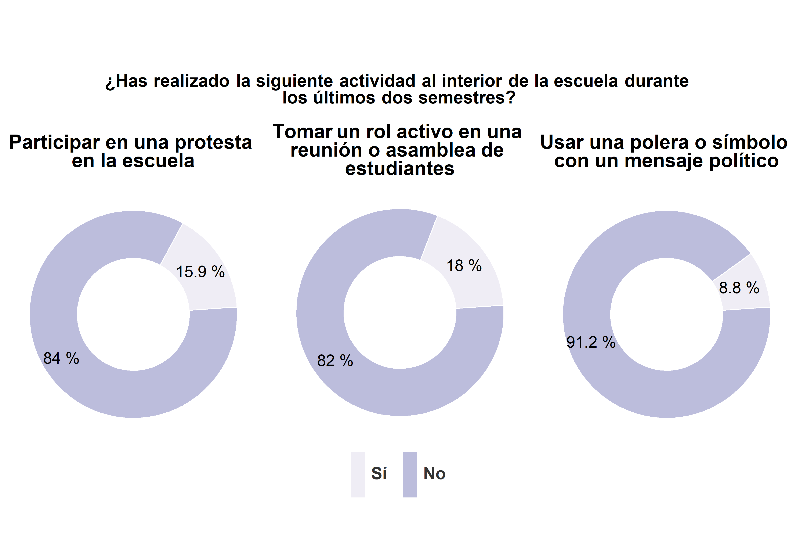

3.2 Sección 2: Participación activista
Son pocos los estudiantes que declaran haber realizado actividades de participación activista. La mayoría de los estudiantes declara que no ha participado en una protesta, tomado un rol activo en una reunión o asamblea de estudiantes, ni usado una polera o símbolo con un mensaje político al interior de la escuela durante los últimos dos semestres (un 84%, un 82% y un 91.2%, respectivamente).

Como puede apreciarse la mayoría de los estudiantes no ha firmado una petición, ni ha participado en una marcha o una toma. Entre estas actividades, firmar una petición es aquella en la que más estudiantes ha participado (un 35.2%). Resulta interesante que la diferencia entre quienes participaron en marchas pacificas y quienes participaron en marchas que resultaron en destrucción de propiedad es pequeña (un 18.8% y un 13%, respectivamente).